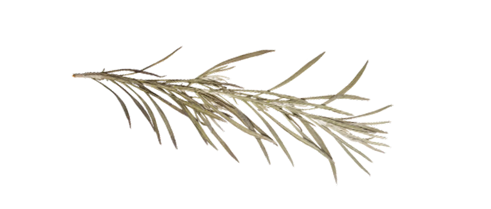

Hướng dẫn sử dụng
Timeline Chương Trình
1. Thời gian dự kiến
| 06h30 - 06h45 | Điểm danh sinh viên tham dự |
| 06h45 - 07h00 | Sinh viên nhận lễ phục, ngồi theo khu vực, số thứ tự đã bố trí |
| 07h00 - 07h15 | Ban tổ chức hướng dẫn nghi thức trao bằng tại sân khấu |
| 07h15 - 07h30 | Đón tiếp đại biểu, khách mời |
| 07h30 - 10h00 |
+ Văn nghệ chào mừng; + Khai mạc: Chào cờ, tuyên bố lý do, giới thiệu đại biểu; + Báo cáo tổng kết khóa học; + Công bố Quyết định công nhận tốt nghiệp; + Công bố Quyết định khen thưởng, phát thưởng; + Đại diện sinh viên phát biểu cảm tưởng; + Trao bằng tốt nghiệp; + Sinh viên ký nhận bằng, bảng điểm và hồ sơ tốt nghiệp theo sơ đồ bố trí tại tiền sảnh tầng 1, Hội trường Đại học Huế. |
| 10h00 | Bế mạc |

2. Thứ tự các khoa
| 06h30 - 06h45 | Điểm danh sinh viên tham dự |
| 06h45 - 07h00 | Sinh viên nhận lễ phục, ngồi theo khu vực, số thứ tự đã bố trí |
| 07h00 - 07h15 | Ban tổ chức hướng dẫn nghi thức trao bằng tại sân khấu |
| 07h15 - 07h30 | Đón tiếp đại biểu, khách mời |
| 07h30 - 10h00 |
+ Văn nghệ chào mừng; + Khai mạc: Chào cờ, tuyên bố lý do, giới thiệu đại biểu; + Báo cáo tổng kết khóa học; + Công bố Quyết định công nhận tốt nghiệp; + Công bố Quyết định khen thưởng, phát thưởng; + Đại diện sinh viên phát biểu cảm tưởng; + Trao bằng tốt nghiệp; + Sinh viên ký nhận bằng, bảng điểm và hồ sơ tốt nghiệp theo sơ đồ bố trí tại tiền sảnh tầng 1, Hội trường Đại học Huế. |
| 10h00 | Bế mạc |
